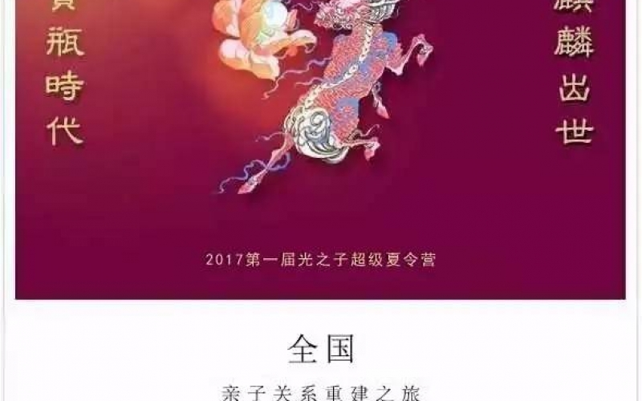
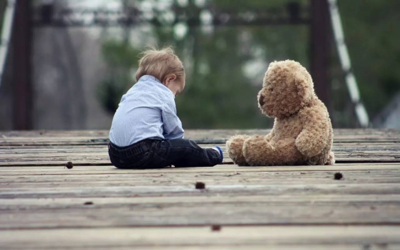
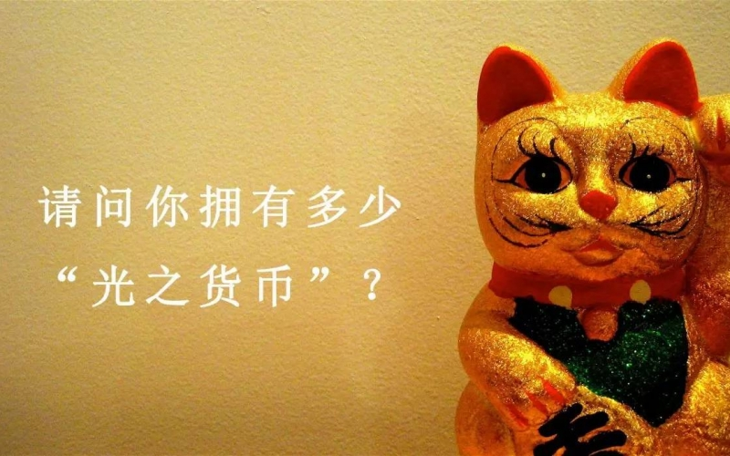
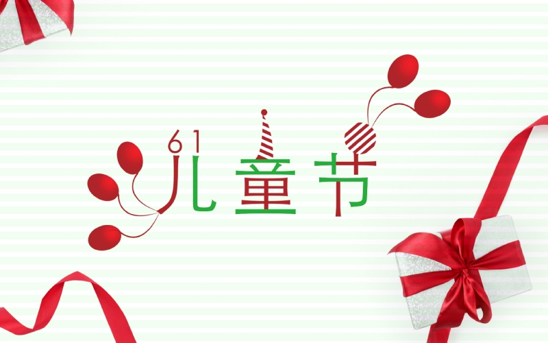
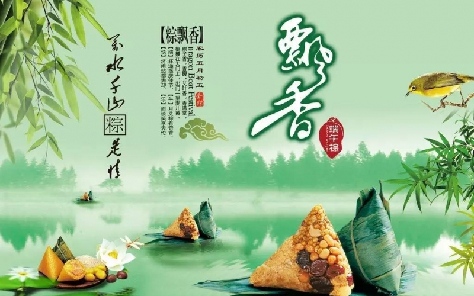
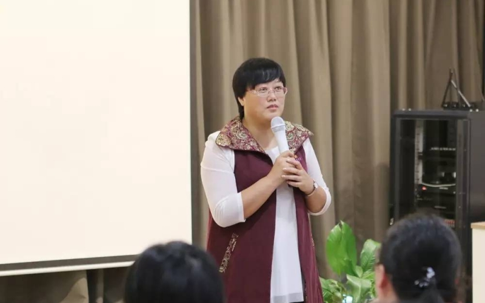
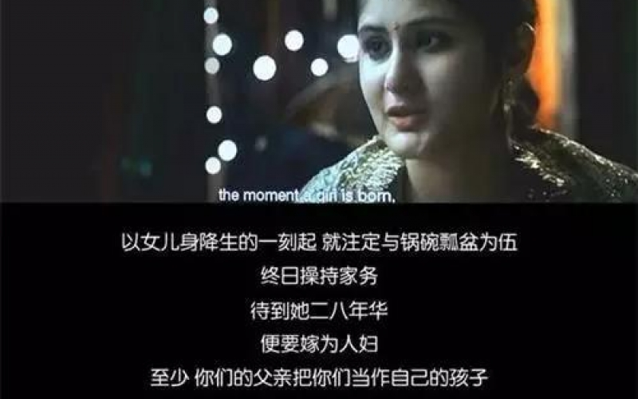
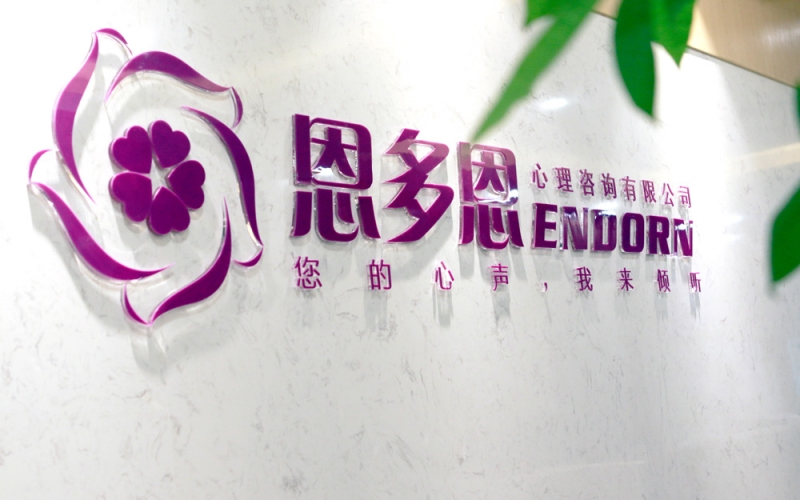
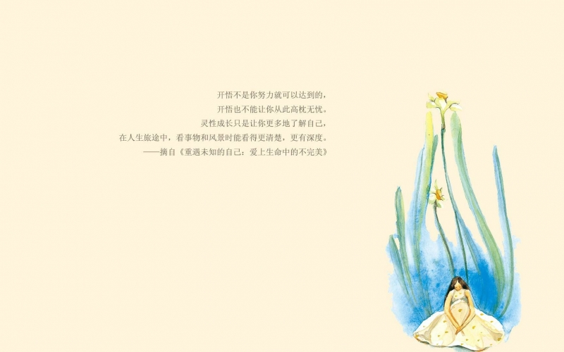

最新动态
- 
-
宝瓶时代 麒麟出世 | 2017恩多恩第一届“光之子”超级夏令营
8月11日：儿童夏令营开营8月14-15日：家长亲子课8月16日：夏令营闭营仪式欢迎全国...
2017-07-20 恩多恩 222
222
- 
-
分享 ∣ 儿时的缺憾，将耗尽一生寻回
心灵成长∣智慧分享童年的缺憾，需要耗尽我们的一生去寻回。如果没有正确的引导，不但可能影响我们自己的一...
2017-06-29 恩多恩375
- 
-
推荐 ∣ 10个问题测出你的心灵财富值！
你听说过“光之货币”吗？它是一种非物质实体的纸币，也称为：心灵财富，亦可转换成为有形的实体财富。也就...
2017-06-22 恩多恩733
-
课程：畅享富贵，道在归位
追求财富是人最基本的需求，很多人往往在追求财富的过程当中会发现：无论怎么努力、怎么打拼就是与钱无缘！...
2017-06-22 恩多恩65970
- 
-
有人@你，有一份儿童节礼物等您领取！
永不过期的童真，永不弃权的快乐，恩多恩祝你：六一快乐！ 岁月是一把无情刻刀，轻轻一挥，我们的童年就被...
2017-06-01 恩多恩66616
- 
-
片片粽叶香，浓浓端午情，恩多恩祝愿大家幸福安康！
端午节对于每一个中国人来说，有纪念的意义；回家吃上父母做的一大筐粽子，是幸福的味道；怀念小时候大人们...
2017-05-31 恩多恩63088
- 
-
恩多恩2017第7期基因班花絮∣全然唤醒内心的爱
点击上方“恩多恩心理咨询”↑关注我们心灵成长∣智慧分享5月12日，繁华盛开的日子，迎来了恩多恩201...
2017-05-31 恩多恩11495
-
父母必修课：《如何培育全像式思维的孩子》
点击上方“恩多恩心理咨询”↑关注我们心灵成长∣智慧分享我们要开车上路，就必须考取汽车驾照，想要成为特...
2017-05-31 恩多恩36375
- 
-
《摔跤吧，爸爸》父亲的爱如此深沉，要用心体会
心灵成长∣智慧分享 《摔跤吧，爸爸》这部火爆的印度电影，改编自真实故事。讲述一个摔跤手...
2017-05-25 admin7
-
“您的心声，我来倾听”心灵分享栏目上线啦！
“您的心声，我来倾听”心灵分享栏目上线啦！ 亲爱的家人，觉醒之路，勇敢地走！而这一路您并不...
2017-05-18 admin2
- 
-
【案例】父亲往生的伤痛让他不堪重负
这几句话，我不断的让个案重复，他伤心欲绝，甚至整个身体都在颤抖。待个案情绪平复后，我问他，你还有听到...
2017-05-18 admin13
- 
-
【案例】我怎样将深层沟通运用于亲子教育
个案是我的儿子，一个单亲孩子，今年14岁。我07年离婚，08年儿子被我接回跟着我生活到现在，6年没有...
2017-05-16 admin6
- 1
- 2
为您推荐
- 宝瓶时代 麒麟出世 | 2017恩多恩第一届“光之子”超级夏令营
- 分享 ∣ 儿时的缺憾，将耗尽一生寻回
- 推荐 ∣ 10个问题测出你的心灵财富值！
- 课程：畅享富贵，道在归位
- 宝瓶时代 麒麟出世 | 2017第一届恩多恩“光之子”超级夏令营
- 所有文章
- 最新动态
- 文化商品
- 慈善公益